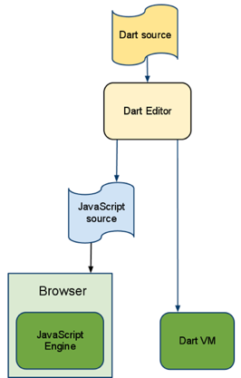
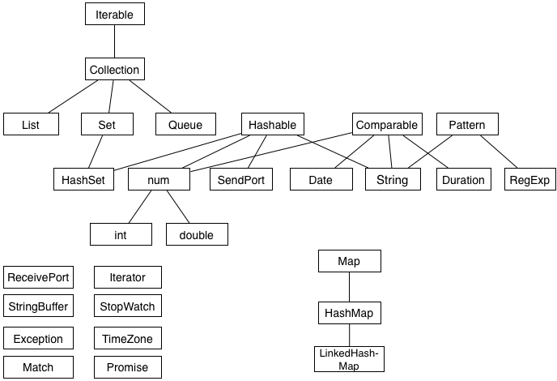

Dart is a new class-based programming language for creating structured web applications. Developed with the goals of simplicity, efficiency, and scalability, the Dart language combines powerful new language features with familiar language constructs into a clear, readable syntax.
Key features of the Dart language include:
The current release includes the Core Library in an early prototype stage.
The Dart programming language is presented here in its early stages. The following design goals will guide the continued evolution and refinement of this open source project:
These design goals address the following problems currently facing web developers:
Here are several code snippets to give you a feel for what Dart code looks like.
Dart’s interfaces and classes provide you with a set of reusable and extensible building blocks. An interface defines a basic set of methods and constants, sometimes by inheriting from other interfaces. A class can implement multiple interfaces, but it only inherits from a single superclass.
The following example defines an interface, along with a class and subclass that implement it:
interface Shape {
num perimeter();
}
class Rectangle implements Shape {
final num height, width;
Rectangle(num this.height, num this.width); // compact constructor syntax
num perimeter() => 2*height + 2*width; // short function syntax
}
class Square extends Rectangle {
Square(num size) : super(size, size);
}
Dart provides, at the programmer’s option, a mixture of static and dynamic checking. When experimenting, the programmer can write untyped code for simple prototyping. As the application becomes larger and more stable, types can be added to aid debugging and impose structure where desired.
For example, here is a sample of untyped code in Dart
that creates a new Point class that has parameters
x and y
and two methods:
scale() and distance().
class Point {
var x, y;
Point(this.x, this.y);
scale(factor) => new Point(x*factor, y*factor);
distance() => Math.sqrt(x*x + y*y);
}
main() {
var a = new Point(2,3).scale(10);
print(a.distance());
}
Here is what this code looks like with types added
that ensure that
x, y, and factor
are of type num,
and that a Point contains two values
of type num:
class Point {
num x, y;
Point(num this.x, num this.y);
Point scale(num factor) => new Point(x*factor, y*factor);
num distance() => Math.sqrt(x*x + y*y);
}
void main() {
Point a = new Point(2,3).scale(10);
print(a.distance());
}
You will be able to run Dart code in several ways:
Translate Dart code to JavaScript that can run in any modern browser:
Chrome, Safari 5+, and Firefox 4+
Execute Dart code directly in a VM on the server side
Use Dartboard to write, modify, and execute small Dart programs within any browser window {% comment %} {PENDING: link to Dartboard} {% endcomment %}
You will be able to embed a Dart program directly on an HTML page,
or you will be able to use a
#import or #source statement
to pull in external files.
Here is the proposed new MIME type,
“application/dart”:
<html>
<body>
<script type="application/dart">
main() {
Element element = document.getElementById('message');
element.innerHTML = 'Hello from Dart';
}
</script>
<div id="message"></div>
</body>
</html>
The Dart language is accompanied by a set of tools to aid rapid prototyping, coding, and debugging for the entire development cycle. Planned offerings will include:
As the following figure shows, the same code can run on both the client and the server. On the client side, the Dart code (translated to JavaScript) runs inside the browser and can communicate with the HTML5 DOM. On the server side, the Dart code runs directly on the command line, for fast iteration and for cloud-based tasks.
 Dart Editor; Dart Editor -> either [Dart VM] or [JavaScript source -> Browser (JavaScript Engine)]" width="266" height="417" >Taking advantage of Dart’s structured nature, the Dart Editor will support method name completion and refactoring.
Dart will provide the following libraries to support web and web server development:
Here is an overview of the interface hierarchy for the current Core Library (subject to change):
This project is open source and will evolve with feedback and participation from the community. We have released the draft language specification at an early stage to gather responses from the developers who will be using this new language and infrastructure for web programming. Here are some additional links for learning more about Dart and providing your feedback: